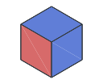
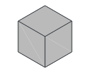
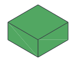
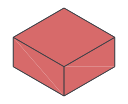
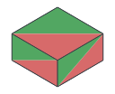
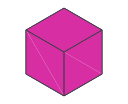
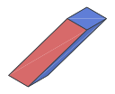
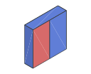
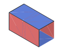
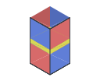

Blocks and Pipes¶
A block graph describes a logical computation encoded by surface code as a spacetime layout. Blocks represent operations on logical patches, and pipes connect their boundaries: temporal pipes continue a patch through time, while spatial pipes join patches for lattice surgery.
A block starts at an integer coordinate [x, y, z], with x and y describing
space and z describing time. Its physical spacetime occupation can be larger
or smaller than a \(1\times1\times1\) cell. For example, a taller cube spans
several time cells, a Y block takes roughly half a cube’s duration, and a moving
block extends across spatial cells. A pipe joins adjacent connectable positions
on the blocks.
Supported blocks and pipes¶
Let \(d\) be the code distance and \(s=2d+2\) the physical lattice pitch of
one block cell. Space occupation counts physical-qubit lattice sites,
including the boundary margin: a distance-\(d\) patch cell occupies \(s^2=(2d+2)^2\) sites.
Time duration is the exact number of syndrome rounds. / denotes zero
occupation or duration. Thumbnails show representative orientations.
Kind |
Thumbnail |
Space occupation |
Time duration (rounds) |
Functionality |
|---|---|---|---|---|
Cube |
 |
\(s^2\) |
\(d\) |
Logical patch memory, initialization, measurement, and lattice-surgery junctions. |
|
 |
/ |
/ |
Virtual boundaries for open logical computation. |
|
 |
\(s^2\) |
\(\lfloor d/2\rfloor+2\) |
Logical Y-basis initialization or measurement. |
|
 |
\(s^2\) |
\(1\) |
Logical X/Z-basis transversal measurement. |
|
 |
\(s^2\) |
\(1\) for X/Z; |
Runtime selection between two logical Pauli measurement bases. |
|
 |
\(s^2+O(1)\) |
Non-deterministic |
T-resource cultivation and lattice-surgery escape for gate teleportation. |
|
 |
\(2s^2\) sliding; |
\(2(d+1)\) |
Logical patch translation by sliding or gliding. |
|
 |
\(2s^2\) |
\(2d\) |
A \(90^\circ\) patch-orientation rotation and one-cell spatial displacement. |
Pipe |
 |
/ |
/ |
Temporal patch continuation or spatial connection for lattice surgery. |
Hadamard pipe |
 |
\(s^2\) temporal; |
\(1\) temporal; |
Logical Hadamard in time or a basis-exchanging domain wall in space. |
Circuit Constructions shows the physical realization of each family.
Special variants¶
Variable-height cubes. The default height=d gives \(d\) syndrome rounds.
A height \(kd+n\) gives \(\lceil kd\rceil+n\) rounds and reserves \(\lceil k\rceil\)
graph cells in time. The reserved spatial footprint remains \((2d+2)^2\).
Height |
Syndrome rounds |
Occupied time cells |
|---|---|---|
|
\(d\) |
1 |
|
\(\lceil d/2\rceil\) |
1 |
|
\(2d\) |
2 |
|
\(\lceil3d/2\rceil-1\) |
2 |
At least two rounds are required. Spatially connected cubes share a height, and the next temporal block starts beyond the reserved cells.
Port roles. A Port has exactly one pipe and leaves the logical boundary open for an input, output, or module connection. Its role and pipe direction determine which interface it exposes.
Port role |
Connection |
Meaning |
|---|---|---|
Input |
Temporal |
Supply an incoming logical state |
Output |
Temporal |
Export the outgoing logical state |
Spatial |
X or Y axis; explicit input/output role |
Expose a side boundary of a single-cell cube |
Multiplex |
Spatial; |
Supply an incoming state and export a correlated output through a Z split.[1] |
Temporal Ports infer their role with role=auto; explicit temporal roles must
agree with the pipe direction. Suitable input and output Ports can be filled
with preparation and measurement boundaries for a closed experiment.
A multiplex Port combines an input and its continuing output at one spatial boundary. It follows the Z-port calling convention: Z-split the incoming qubit, connect one branch to the computation by a Z merge, and keep the other branch as the stationary output.[1] In Bloq, the virtual split exposes one temporal input and one retained output alongside the spatial connection. Their Z operators are correlated; their X operators belong to the full split relation. This lets arithmetic use the qubit’s Z value while retaining the qubit. Named readouts at a multiplex Port must be output-safe: Z support is allowed, while X or Y support on the retained output is rejected.
Y-basis initialization and measurement. A Y block with a +Z pipe
initializes the future patch in \(+Y\); with a -Z pipe it measures the past
patch in the Y basis.
Moving blocks. Walking (walk) and patch rotation (rotate) are the two
moving block families. Walking moves one spatial cell by sliding along a
spatial axis or gliding diagonally along both axes. Patch rotation turns the
patch orientation by \(90^\circ\) and moves one cell along a spatial axis.
Both advance one graph time layer and connect to temporal pipes at their
start and end positions.
Compose blocks¶
Blocks acquire their logical meaning together with their pipe connections.
For example, the following five-block layout gives the geometry of a logical S gate.
The data patch runs from the input Port at [0, 0, 0] through an XZX cube to
the output Port at [0, 0, 2]. An adjacent XZX cube initializes an ancilla
in \(+X\). A spatial pipe joins it to the data patch, and a temporal pipe carries
it to a Y-basis measurement.
Both examples place the blocks, connect them with pipes, and return the validated block graph.
import bloq
def build_graph():
graph = bloq.BlockGraph()
for position, kind in [
((0, 0, 0), "Port"),
((0, 0, 1), "XZX"),
((0, 0, 2), "Port"),
((1, 0, 1), "XZX"),
((1, 0, 2), "Y"),
]:
graph.add_block(bloq.Block(position, kind))
for position, direction in [
((0, 0, 0), "+Z"),
((0, 0, 1), "+Z"),
((0, 0, 1), "+X"),
((1, 0, 1), "+Z"),
]:
graph.add_pipe(bloq.Pipe(position, direction))
graph.validate()
return graph
use bloq::prelude::*;
fn build_graph() -> Result<BlockGraph> {
let mut graph = BlockGraph::new();
for (position, kind) in [
([0, 0, 0], BlockKind::Port),
([0, 0, 1], BlockKind::Cube(CubeKind::XZX)),
([0, 0, 2], BlockKind::Port),
([1, 0, 1], BlockKind::Cube(CubeKind::XZX)),
([1, 0, 2], BlockKind::Y),
] {
graph.try_add_block(Block::new(position, kind))?;
}
for (position, direction) in [
([0, 0, 0], Direction::ZPLUS),
([0, 0, 1], Direction::ZPLUS),
([0, 0, 1], Direction::XPLUS),
([1, 0, 1], Direction::ZPLUS),
] {
graph.try_add_pipe(Pipe::new(position, direction))?;
}
graph.validate()?;
Ok(graph)
}
Geometry exports¶
glTF exports logical blocks, pipes, colors, and supported surface overlays for visualization.
The HTML viewer embeds the model and loads its renderer from a CDN, so displaying it requires network access.
These files do not encode executable control dependencies or a physical quantum program.
Exporting through the Rust graph API requires gltf; the CLI includes it.
Next, Actions introduces logical measurements and classical control to extend a block graph beyond its geometry.